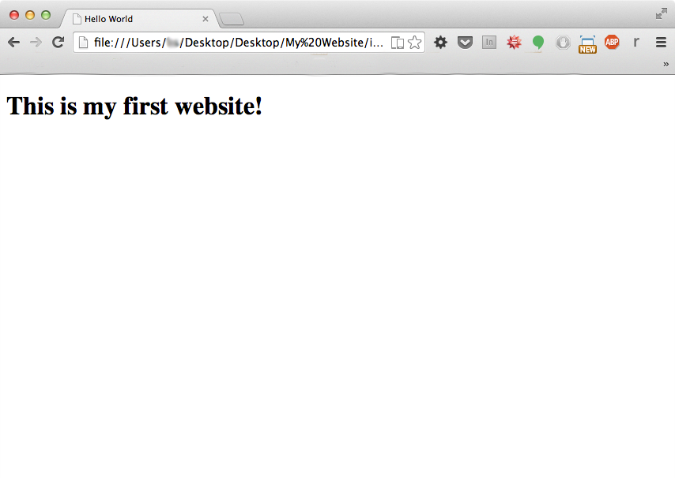

This site helps you learn all the steps of making a website from designing to coding. You will learn how to code in HTML, the core language of the web, and CSS, the code for making a website appealing. We have four sections: HTML, CSS, Design, and Technical. Each book has chapters that focus on the main ideas and core concepts of the section. In HTML you learn how to put content into your website in the form of text, images, and more. In CSS you will discover how to affect your content with colors, fonts, and layouts. The Design section focuses on the Principles of Design and how to apply them to a website. Finally, in the Technical section, you will learn about saving and publishing your website. However, before that, we will go over a few basics on this page.
On this page, we will be going over the basics you need to know before getting into the code. The first step in this is how to set up your workspace. To begin, create a folder in your documents, and name it "My Website". This is where you will be keeping the files for you website.

After this, you can open up a text editor. On Windows, a good option is Notepad. On Mac, the best is TextEdit. However, with TextEdit, you have to set it to plain text before writing code (Format - Make Plain Text), or it will not save correctly.
Once you have got this started, it is time to put in some code. For now, we'll just give you some code to copy, but it will be explained later. For now, just copy this into your text editor:
<html>
<head>
<title>Hello World</title>
</head>
<body>
<h1>This is my first website!</h1>
</body>
</html>
Once you have this in your editor, you can now save it. Press the save button or Ctrl-S, but when the save screen pops up, do not go with what it says. If it says .txt, .rtf, or any other file extension other than html, replace it with .html. When you have done this, replace the text before it with index. This allows a browser to recognize it as a home page later on. The final name should be "index.html". Make sure to save this to your new folder. If it reopens in your text editor, make sure that you saved it as a .html, and not as a txt. Some applications will ask you if you want to use .html or .txt. Use .html
Now that you have done this, go back to the "My Website" folder. There should now be a file in there, your "index.html". If you double-click on this, it should open up in your web browser. What should show up is a webpage with some text at the top saying, "This Is My First Website". If it doesn't, go back and double check that you completed all of the correct steps.
With that, you have learned the basics that you need to start coding. By navigating throughout, you can use the menu to the left, or the search bar. Also, you can use the compiler in the top right corner to test your code within the website! To begin, choose the "HTML" section to the left, and start going through the chapters.